心臓血管外科 【心臓血管病センター】
Cardiovascular surgery虚血性心疾患
治療
オフポンプ心拍動下冠動脈バイパス術
off pump coronary artery bypass grafting (OPCAB) (図1)
狭心症や心筋梗塞といった冠動脈の動脈硬化性病変に対する手術を冠動脈バイパス術といいます。現在でも多くの施設では人工心肺装置（図２）という大きな機械を心臓に装着してこの手術を行っていますが、機械による非生理的な血流であるため、脳血管の狭窄が強い患者さんや、腎機能障害や呼吸機能障害を有する重症の患者さんは合併病変が悪化することが危惧されていました。この問題を解決すべく、当院では２０００年から人工心肺装置を用いずに、スタビライザー（図３）と言う器具を、冠動脈の走行する心臓表面に固定して拍動を抑えて血管縫合する＜心拍動下冠動脈バイパス術＞を導入しました。単独冠動脈バイパス手術の95％以上で行っております。
以前では手術適応にならなかった高度の脳血管障害を有する患者さんや、ご高齢の患者さんにも低侵襲で手術が行えるようになり、７日から１０日での早期退院も可能となりました。
図１：心拍動下冠動脈バイパス術
図２ 人工心肺装置
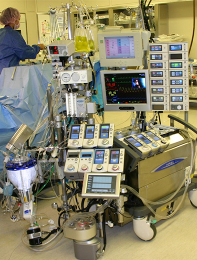図３ スタビライザー
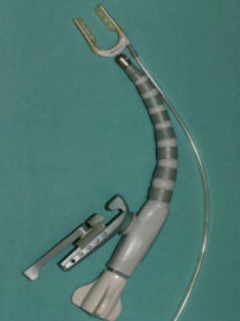弁膜症
治療
切開する範囲を最小限にとどめる低侵襲心臓手術（MICS）
MICS（ミックス）とは、大きな胸骨正中切開で行う心臓手術を小さな切開で行う心臓手術のことで、英語の略語からMICS（ミックス）と呼ばれています。具体的には腋の下もしくは乳房の下を5-7cm切開して肋骨の隙間より心臓の手術を行います。MICS（ミックス）では、胸骨を切らないため、出血が少なく、傷の感染のリスクもほとんどありません。また、一般的に胸骨正中切開の手術後は、自動車、自転車の運転や上半身を使う肉体労働や、テニスやゴルフなどのスポーツは、約２ヶ月間は控える必要があります。そのため多くの患者さんが２ヶ月間のうちに体力が低下し、結局、日常生活に戻るのに数ヶ月-半年かかることもあります。ミックス手術ではそのような運動制限がないため、早期リハビリが可能となり、早期社会復帰が可能になります。 傷が小さく美容面にも大変優れており、特に女性では、傷口が乳房に隠れる、ほとんど見えなくなるため、非常に満足度の高い手術です。
従来の心臓手術
MICS（小切開心臓手術）
経カテーテル大動脈弁置換術 (TAVI) （図４・５）
〜心臓外科手術が困難な大動脈弁狭窄症に対する新しい治療法です〜
大動脈弁狭窄症は、全身に血液を送るポンプの役割を持つ左心室と大動脈の間にある大動脈弁が石灰化等で硬化して血液を送る量が少なくなる病気です。
現在、大動脈弁狭窄症の患者さんに対しては従来から人工心肺装置を用いて石灰化で開かなくなった大動脈弁を切除して人工弁（生体弁•機械弁）で置き換える手術（外科的大動脈弁置換術）が行われており、安全性も確立した標準的な治療です。
2013年10月から、様々な理由で手術ができないか、非常に危険と判断された重症大動脈弁狭窄症の患者さんに対して、経カテーテル大動脈弁置換術 (TAVI)という新しい治療が保険適応になりました。
経カテーテル大動脈弁置換術 (TAVI)とは、狭くなった大動脈弁をバルーンで押し広げて、カテーテルという管を用いて折り畳んだ専用の生体弁を留置する治療法です。現在、足の血管からカテーテルを挿入する方法と左胸に小さな切開をおいて左心室からカテーテルを挿入する方法があります。
経カテーテル大動脈弁置換術 (TAVI)は、体の負担が比較的少ない治療ですが、まれに重篤な合併症が起こる危険性もあり、循環器内科医、心臓血管外科医、麻酔科医、看護師、臨床工学士、放射線技師、臨床検査技師など多職種が一つのチームとなって治療にあたっています。
大動脈弁狭窄症の治療にお困りの患者さん、ならびにその治療をお考えの患者さんがおられましたら、当院 心臓血管外科か循環器内科弁膜症外来に一度ご相談いただけましたら幸いです。
図４ 経カテーテル大動脈弁置換術 (TAVI)で用いる生体弁
図５ 経カテーテル大動脈弁置換術 (TAVI)
術後のQOL（生活の質）を考慮した僧帽弁形成術（図６・７）
僧帽弁閉鎖不全の手術には、人工弁置換術と自己の僧帽弁を温存・修復する僧帽弁形成術があります。人工弁置換術では、機械弁を使用するとワーファリンの内服を終生必要とし、生体弁は劣化・再手術の問題があります。これに対して、僧帽弁形成術は自己弁を温存するため、劣化の問題もわずかで、心房細動がなければワーファリンは不要で、患者さんのQOLが改善します。
図６ 僧帽弁閉鎖不全（前尖の逸脱）
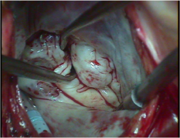図７ 僧帽弁形成術（図８の症例）
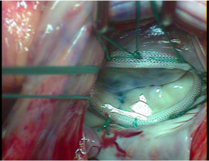心房細動に対する手術
僧帽弁や三尖弁閉鎖不全症に対しては、人工弁を使用せずに、できるだけ患者さん本人の弁を温存修復する弁形成術を積極的に施行しています。人工弁に伴う合併症などのリスクが軽減され、患者さんのQOL（生活の質）の向上にもつながっています。また、弁膜症は心房細動という不整脈を伴うことが多いのですが、心房細動は脳梗塞の原因となるため、当院では心房細動に対する手術を弁膜症手術と同時に行っています。
大動脈瘤
治療
弓部大動脈瘤に対する人工血管置換術
頭部に血液を送る血管が枝分かれする弓部大動脈の動脈瘤の手術は、未だリスクが高いとされています。一般的には全身の血液の流れを一時的に止める循環停止法で手術を施行します。その際、体温を20℃に下げて行う施設が多いのですが、当院では25〜28℃にとどめることで、患者さんの身体の負担が軽減され、高齢の患者さんの手術も比較的安全に行えるようになりました。
胸部大動脈瘤に対するステントグラフト治療（図８）
胸部大動脈瘤に対する手術は、大きく開胸して、人工心肺装置を装着し、動脈瘤を切除して人工血管で置換します。呼吸機能障害がある患者さんや、以前に開胸手術を受けたことのある患者さんには負担が大きい手術でした。
これに対して、２００８年秋から＜ステントグラフト治療＞という新しい治療が保険適応となり、当院でも本格導入いたしました。
ステントグラフト治療とは、特殊な金属ステントの人工血管（図９）を折り畳んでシースと呼ばれる管に充填し、このシースを瘤のある胸部大動脈まで誘導して折り畳んだ人工血管をシースから大動脈内に押し出して瘤への血流を遮断する治療です。
この治療により、患者さんの負担はかなり軽減され、早期退院・早期社会復帰が可能となりました。
なお、この低侵襲治療はすべての患者さんに可能というわけありませんので、適応に関しては当科へご相談下さい。
図８ 胸部大動脈瘤に対するステントグラフト治療
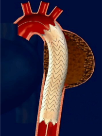図９ 胸部大動脈瘤に対するステントグラフト
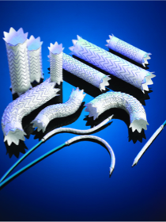ステントグラフト治療前
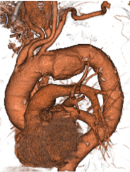ステントグラフト治療後
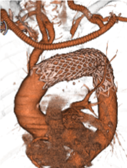腹部大動脈瘤に対するステントグラフト治療 （図１０・１１）
通常の人工血管置換術の困難な腹部・腸骨動脈に対して、低侵襲な治療としてステントグラフト治療をおこなっています。腹部大動脈瘤破裂など緊急を要する疾患に対しても、24時間心臓血管外科医が病院内に待機しており迅速な対応を行っています。
図10 腹部大動脈瘤に対するステントグラフト治療
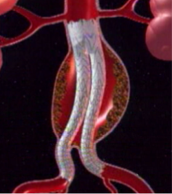図11 腹部大動脈瘤に対するステントグラフト
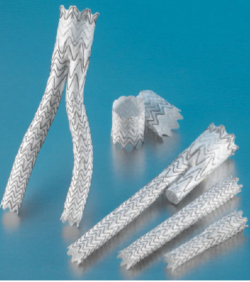ステントグラフト治療前
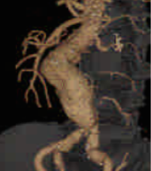ステントグラフト治療後
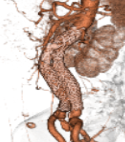